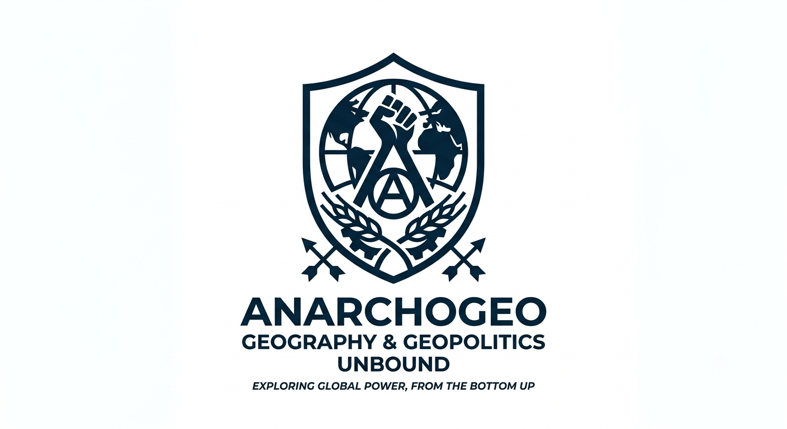

My first post!
By: Sara Novakowiski
Welc to my blog!!! I'm gonna post about... everything! Peripheral countries, wars and conflicts, leaders, history, islands, natural disasters, the political spectrums and, above all things, resistance!